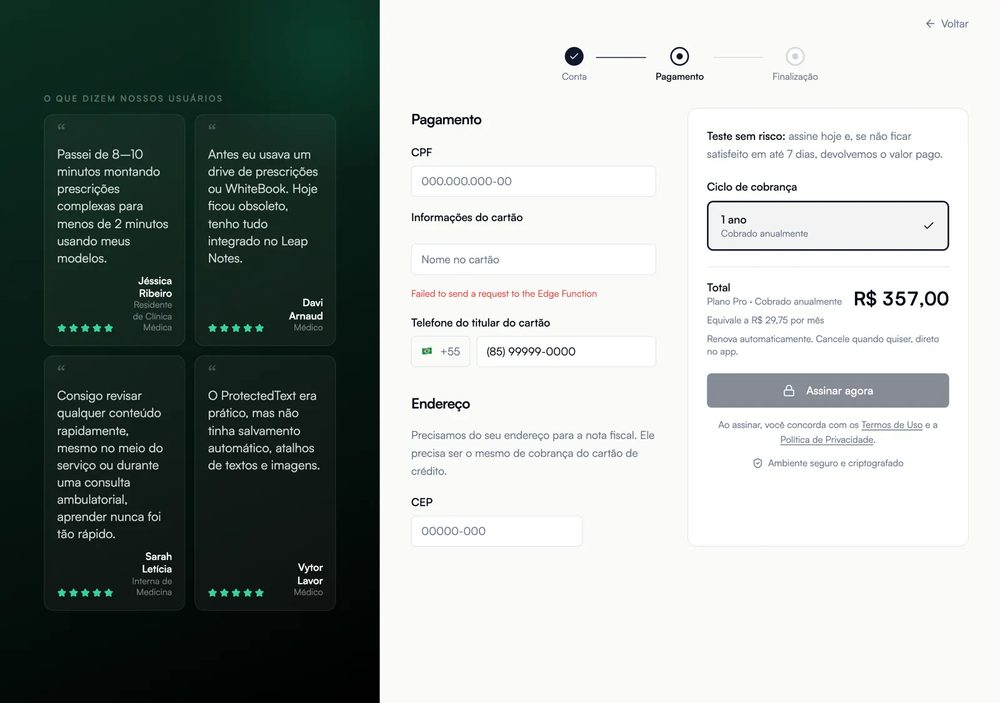
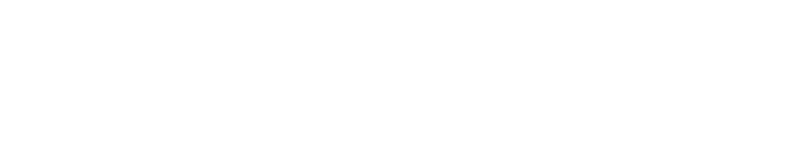

no arO caderno clínico de mais de mil médicos e estudantes de medicina.
Cofundador e engenheiro principal · nov/2025 até hoje
O Leap Notes é onde internos, residentes e médicos guardam condutas, prescrições e resumos que usam no plantão. Comecei o produto com o time de fundadores e sou responsável por toda a engenharia, do editor à cobrança.
- Editor rico sobre TipTap com colaboração em tempo real, tabelas, imagens e exportação para PDF e DOCX.
- Anatomia 3D com 2.234 estruturas selecionáveis, calculadoras clínicas, feed de questões e o Leap AI, um assistente com conhecimento clínico dentro da nota.
- Modelo freemium e checkout próprio com três gateways de pagamento (cartão, Pix e assinatura), plano vitalício por leva e painel de observabilidade para os sócios.
- Crescimento orgânico: com estratégia de conteúdo nas redes, levamos o perfil do Leap Notes a mais de 10 mil seguidores sem anúncio pago.
- Mesmo código no navegador e no celular via Capacitor, com 46 edge functions em TypeScript cuidando de webhooks, uploads e e-mails.
- 0+pessoas já acessaram a plataforma
- 0 milnotas clínicas salvas
- 0 mil+salvamentos com histórico de versões
- 0estruturas na anatomia 3D
ReactTypeScriptNode / Deno edge functionsSupabaseTipTap + YjsStripe · Asaas · AbacatePayCapacitorPostHogSentry